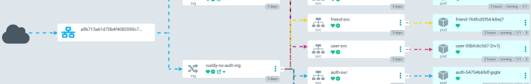
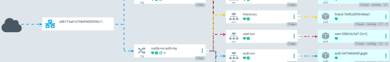

간단한 자기소개
안녕하세요, 사용자를 위해 끊임없이 성장하는 개발자입니다. 어렸을 때, 네이버 블로그 등을 읽으며 쌓아왔던 IT지식으로 주변 지인들을 도왔을 때, 느꼈던 짜릿함이 능력있는 개발자가 되고자 결심을 했습니다. 자동화 프로그램 개발('타학과 교수님의 연구기간을 '6개월'에서 '1초로' 단축'), 국방부 데이터센터에서 근무경험 활용('학과 컴퓨터실의 네트워크 개선') 등의 활동이력이 있습니다. 최근에는 삼성청년SW아카데미에서 Spring, gitOps, Jira, AWS 클라우드, 쿠버네티스 등의 기술 적용을 통해 능력있는 개발자가 되도록 노력했습니다. 앞으로도 다양한 기술 습득 및 적용을 통해, 프로젝트를 발전시키는 개발자가 되겠습니다.

Qualification
Work Experience
Server & Network Management
Education
정보통신공학
삼성청년SW아카데미
DNA 중심 SW서비스 전문가 양성교육
R Shiny를 이용한 웹 어플리케이션 개발
SW산업인력육성교육
R을 활용한 빅데이터 분석 전문가 양성 과정
My Skills
Languages
Web Develop
Devops
Embeded System
Arduino, Raspberry Pi AT89S52 Microprocessor, MCU Unit control I2C, SPI, UART(Serial), GPIO control Qt IoT, smartFarm
Portfolio
Vuddy (삼성청년SW아카데미 자율프로젝트)
 

-
프로젝트 소개
GPS 기반으로 친구의 위치를 공유하고, 장소에 대한 게시글로 추억을 남기는 SNS -
담당역할
CI/CD인프라 관리(AWS 클라우드) -
기여도
15% -
구성원
본인 외 5명 -
사용한 기술
쿠버네티스(Deployment resource, HPA & karpenter, Argo CD & Role & RBAC, Helm 패키징, External DNS, Prometheus & Grafana)AWS Cloud (EKS, EC2 & Loadbalancer, route53, IAM(Policy, Role, OIDC, IRSA), certifacte Manager, S3, Dynamo DB)IaC(테라폼)CI/CD (Gitlab Runner, Argo CD)Docker ContainerDocker Engine, Docker Compose, NGINX -
활동
NGINX Auth_request 플러그인으로, MSA 아키텍처 어플리케이션간 결합도를 낮춤무중단 CI/CD 배포이미지 변경횟수를 최소한으로 하는 CLOUD NATIVE 어플리케이션 제작에 기여쿠버네티스 환경 운영전에 docker에 NGINX와 어플리케이션을 올려서 프로젝트 진행을 빠르게 함.쿠버네티스의 RBAC 접근제어 기능으로 Argo CD의 '읽기전용 개발자 계정 생성' & 해당 계정으로 팀원들이 현재 쿠버네티스 레플리카수나 백엔드 서비스의 로그를 볼 수 있게 함쿠버네티스의 External DNS와 Helm, Argo CD, 테라폼 백엔드 기능을 사용하여 'gitOps 방식을 구현' & DNS 등록 등 불필요한 프로세스 제거IaC를 사용하여 인프라를 코드로 관리locust으로 부하테스트HPA와 Karpenter으로 오토스케일링을 구현하여 1만명당 1만개의 데이터를 보내는 응답속도를 1초 이내로 만듬gitlab runner을 사용하여 CI/CD 및 무중단 배포 적용MySQL의 SQL 스키마까지 도커파일에 패키징해서, production 운용환경에서 적용하는 RDB 컨테이너 이미지를 만듬MySQL, Redis, Kafka Cluster 구축 -
이슈 및 트러블 슈팅
AWS EKS의 기본설정 POD IP개수가 노드당 최대 17개까지만 할당할 수 있음. 그리고 그에 따라서 새로 스케줄링될 파드가 pending상태로 stuck되거나, 실행중인 파드가 방출되는 Pod Eviction 문제도 발생함 -> IP Prefix 방식중에 하나인 'WARM_PREFIX_TARGET'를 적용하거나, HPA가 최대로 할당할 수 있는 Pod 개수를 적절하게 계산해서 노드수를 최소한으로 사용하는 방법 중에 후자를 선택함Android 및 백엔드단에서 unknown host가 발생하는 문제 -> AWS Loadbalancer가 IPv4, IPv6의 2가지 방식의 주소를 갖는 문제 때문에, DNS resolve시에 IPv6이면 어플리케이션(안드로이드, 스프링)단에서 'http://[ipv6 주소]'로 변환해주야함. 이를 해결하기 위해 개발팀에게 IPv4만을 사용하게 설정하는 방법을 알려줌백엔드단에서 MySQL Max Connection 초과 에러 151개에서 1만개로 설정변경함.쿠버네티스 Add-on인 AWS Autoscaler 속도 때문에 서비스 품질저하가 발생하는 문제 AWS Autoscaler Add-on은 인프라를 프로비저닝후에 노드를 join하기 때문에, 노드를 확장하는 속도가 매우 느림. karpenter나 warm pool을 사용하여 문제를 해결할 수 있는데, 전자를 선택함
Eighteen (삼성청년SW아카데미 특화프로젝트)


-
프로젝트 소개
TJ Media 노래방 곡 정보를 Netflix, Youtube 등에 사용되는 '추천 알고리즘'으로 추천해주는 플랫폼 -
담당역할
ES기반 검색엔진 개발CI/CD인프라 관리(AWS EC2) -
사용한 기술
Elasticsearch & n-gramSpring BootREST APIGit & GitlabJira & MattermostDocker & Docker-composeNGINXAWS EC2CI/CD (Gitlab Runner)Git & Gitlab -
구성원
본인 외 4명 -
활동
ES기반으로 초성검색 엔진을 구현 1) n-gram을 사용하여 'ㅅㅈㅎㅈ'을 검색하면 '소주한잔'의 결과를 반환 2) ES인덱싱을 사용하여 RDB의 Full Scaning 방지JSoup, selenium을 사용하여 TJ Media 노래방 노래목록을 crawling리액트 및 스프링 프레임워크, flask를 도커 컨테이너 이미지로 패키징CI/CD 적용팀장으로써 팀원들이 서로 뭉쳐서 개발할 수 있도록 노력함 -
이슈 및 트러블슈팅
Elasticsearch에 8만 곡의 TJ 미디어 노래목록을 REST API로 전송하면, postman이 stuck되는 현상이 있음. -> 원인 : ES에 원격으로 데이터를 넣는 속도가 원래 느리다고 함. 실제로 네이버 라인 등 ES를 사용하는 기업도 이러한 문제가 있어서, 특정단위로 데이터를 쪼개는 병렬전송방식으로 운영하고 있음. -> 노래목록은 정적데이터이기 때문에, 도커 컨테이너에 접속('docker exec -t Elasticsearch /bin/bash [rest api 명령]')해서 데이터를 삽입함Elasticsearch 한개의 인덱스 크기당 데이터 개수 제한한 팀원이 행동에 대해 문제가 있었음.이전팀에서 자신에 대한 안좋은 소문이 있다는 이유로 회의도 제대로 참여하지 않고, 같은 팀원에게 일부러 상처를 뱉는 말을 함. 해당 팀원에게 진심을 전해보기도 하고, 직장생활을 했던 컨설턴트님으로부터 해결방법을 물어보면서 최대한 좋은 결과를 내기 위해 노력함. 결과적으로는 해당 팀원의 중도퇴소를 막고 프로젝트를 성공적으로 마무리함. -
아쉬운 점
삼성청년SW아카데미에서 지원해주는 2.5주간의 클라우드 특강(강사 : 김문주)까지 들으면서 '쿠버네티스'를 적용하려고 했지만, '코로나19 걸림', '팀장으로써 팀원 관리' 등의 이유로 적용을 못했던게 아쉬웠음.
Playground (삼성청년SW아카데미 공통프로젝트)


-
프로젝트 소개
장소, 팀원의 능력치 등 원하는 조건에서 운동모임을 하고 싶은 사람들이 운동을 지속적으로 할 수 있도록 도와주는 플랫폼 -
특이사항
-
전국본선 진출 및 최종평가에서 1위 수상
-
기여도
-
35%
담당 컨설턴트님으로부터 제가 사용했던 Spring Cloud, Flutter 등의 다양한 기술을 짧은 시간내에 적절하게 사용한
점을, 높게
평가받아서 후보로 올라감. 발표내용도 사용기술에 대해 중점으로
어필을 해서 3위에서 1위로 최종평가를 받음
-
구성원
본인 외 5명 -
담당 역할
MSA 아키텍처 설계 및 구축무중단 CI/CD 배포React 웹 프레임워크가 앱애서 실행될 수 있도록, Hybrid App 제작Firebase Cloud Message 백엔드 작성 및 FE 가이드OAUTH2 기반 카카오 소셜 인증 및 사용자 정보 서비스 백엔드 작성 -
사용기술
-
Spring Boot 3.0.2
-
Lombok
-
Redis
-
JPA & queryDSL & MySQL
-
REST API
-
Firebase Cloud Message
-
OAUTH2 & Kakao Open API
-
Docker Container & Docker Engine, Docker Compose
-
CI/CD (Jenkins & Jenkins's Blue Ocean 플러그인, Gitlab Integration CI/CD)
-
Spring Cloud(Eureka Server/Service Discovery, Gateway)
AWS EC2-
Git & Gitlab
-
Jira & Mattermost
-
VMWare & XCode, Android Studio, Flutter
-
활동
-
OAuth2기반으로 카카오 소셜 로그인
-
Redis를 사용하여 access_token 및 refresh_token 발급
1) 기간지나면 자동으로 삭제되게 설정했음. 2) 해킹감지시에 토큰삭제를 목적으로 설계를 했음
-
(Spring boot기반) Firebase Cloud Message를 사용하여 App Push 알림을 발생시키는 것과 queryDSL & JPA를
이용해서 사용자 정보를 CRUD하는 서비스의 REST API 개발
-
MSA 아키텍처 설계 및 예외 테스트케이스 고려
1) MSA 아키텍처에서 사용되는 Hystrix와 같은 Circuit Breaker 등에서 필요한 기능을 조사 2) 채팅서비스를 오토스케일링했을 때,
같은 방에 있는
사용자를 관리하는 객체를 찾지 못하는 점을 Kafka와 같은 Pub/Sub 모델을 팀원에게 제안
-
ERD 다이어그램 설계
1) 테이블 정규화 2) 부모/자식관계 테이블 설계
-
Flutter를 사용하여 웹뿐만 아니라 Android, IOS 플랫폼을 기반으로한 Hybrid App 개발을 통해 여러 플랫폼에서 사용이 가능하도록
만듬
-
Jenkins 파이프라인 스크립트 작성, 병렬처리 스크립트로 8개의 어플리케이션 빌드시간을 9분에서 1분으로 단축
-
Gitlab Integration CI/CD를 통해, 팀원들이 jenkins 동작상황을 Gitlab에서도 볼 수 있게 만듬
-
AWS EC2 해킹공격후 조치
1) 빠른 서비스 복구를 위한 도커이미지를 docker hub에 올리고, docker compose 스크립트를 미리 작성하여 'docker
compose up -d' 명령어 하나만으로
복구를 할 수 있게 만듬 2) 채팅, 매칭 서비스 등 각 서비스마다 서로 다른 SSL 인증키 발급 3) 팀원들과 회의를 통하여 MySQL 등의 암호를
보다 복잡하게 설정
-
API Gateway단에서 Cors 처리설정
-
이슈 및 트러블슈팅
-
백엔드단에서 CORS 설정이 안먹히는 문제
-> Postman의 http header 응답내용을 분석후, API Gateway가 중복헤더 필터링을 통해 문제해결
-
스프링부트 3.0.2에서 Swagger, queryDSL 등의 dependencies를 설정하는 방법이 기존버전과 다름
->로그를 보며 차근차근 해결을 해나감
-
JPA의 단방향/양방향 관계
->JPA는 테이블 모델이 아닌 객체 모델로 생각하고 개발해야한다는 점을 알게됨
-
배운점
MSA 아키텍처를 구현을 해보면서, 프로젝트의 규모가 클 수록 개발 난이도를 낮춰준다는 것을 알았습니다. 또한 어플리케이션들을 분리를 통해 서비스 자체를 중단하지 않고, 수정된 어플리케이션만 내용을 반영하는 무중단 배포의 장점을 느꼈습니다.도커와 Hypervisor의 차이점을 알게 되었습니다.git 사용실력이 늘었습니다. 팀원들과 jira로 git을 연동하기 위해 git 브랜치 전략을 함께 이야기를 했고, 거기에 따라서 git을 사용을 했습니다. 그러다보니 amend, merge request 등의 git 기능까지도 사용을 하면서 예전보다 실력이 많이 향상되었습니다.Spring Boot으로 REST API를 작성하면서, JPA와 OAUTH2인증에 대해 알게 되었습니다.데이터를 DB에서 자주 가져와야하는 경우 캐쉬서버로부터 데이터를 가져와야한다는 것을 알게 되었습니다. MSA 아키텍처를 컨펌받으로 갔을 때, 컨설턴트님이 채팅서버 부분을 지적한 적이 있습니다. "채팅은 1초만해도 데이터를 엄청 많이 가져오는 것 때문에 DB를 많이 힘들게 한다. 안그래도 DB는 느린데, 이렇게 짜면 현업에서는 DBA한테 혼난다. 다른 방법을 구상해라!"라고 말씀을 해주셨습니다.NoSQL을 왜 사용하는지 알게 되었습니다.Firebase Cloud Message를 사용하는 방법을 알게 되었습니다.JPA에 관한 것을 배울수있었습니다. 예를 들면 '순환참조', 'N+1' 문제 등이 왜 발생하며, 어떻게 해결해야하는지를 배울 수 있었습니다.웹은 해킹에 항상 노출이 되어있으니 조심해야겠다고 느꼈습니다. 단순히 교육용 프로젝트이기 때문에 해킹에 별위험이 없다고 생각을 했지만, 실제로 DB나 AWS EC2를 탈취를 당한적이 있었습니다. 또한 Redis 비밀번호를 설정하지 않았다가 web bot이라는 crawler가 지멋대로 저희의 redis 데이터를 수정했습니다. 그 후에 DB에 비밀번호를 복잡하게 설정하거나 SSL 적용 등 해킹에 경각심을 가졌습니다.Spring이 버전업을 하면서 블록킹 방식인 tomcat에서 넌-블로킹방식의 netty를 사용해서 속도를 높히게 된다는 것을 알게 되었습니다.JPA에서 @Embeddable이나 @IdClass으로 '복합키를 사용'하는 방법을 배웠습니다
Travel - SSAFY Final Project in first semester
-
제작동기
우리가 조용한 공원, 북카페에서 혼자만의 시간을 보내거나, 식당, 호프집 등 지인과 함께 이야기를 하며 스트레스를 풉니다. 이 모든게 하나의 공간이라는 곳에서 이루어지는 점을 착안하여, 새로운 장소를 탐색할 수 있도록 기획을 했습니다. 우리의 서비스는 사람들이 장소에 대해 사진과 함께 글을 남기면서, 한번도 가보지 않았던 곳, 혹은 알지 못했지만 매력적인 장소를 발견하게 해주는데 목적이 있습니다. -
결과
네이버 블로그 editor처럼 게시글에 이미지를 업로드 하는 방법을 배웠습니다.Vue.js를 cli가 아닌 cdn만으로 하는 방법을 배웠습니다 -
사용한 기술
Spring BootMySQLSpring SecurityJWT for loginMyBatisVue.jsHTML & Javascript & SCSSJavascript Library : 'summernote' -
사용자 편의를 위해 했던 것
사용자 입력에 따른 반응 등 CSS로 UX를 높히려고 노력했습니다. -
구성원
본인 외 1명 -
역할
Front EndLogin & Account Info edit BackendSpring Security for JWT(인가받지 않은 접근 403에러 처리)Landing 페이지 BackendHome 페이지 Backend아파트 매매 정보 조회 Backend게시판(이미지 업로드 및 다운로드 처리(Spring, DB 등록),게시글 업로드 및 조회, 게시글 카테고리 필터링) Backend
SSAFY Project(version2,version3~4,version5) in first semester


Cloud CCTV
-
제작동기
원격으로 농장상태를 모니터링할 수 있도록 하기 위해 CLOUD CCTV를 만들었습니다.스마트팜을 사용하는 농장주에게 필수적인 것이 무엇인지를 고민했고, 아버지 지인분들이 자주 밖을 나가는 것을 떠올렸습니다. 또한 네트워크에 연결된 자동문과 함께 활용한다면, 농장주와 일을 부탁받은 작업자가 현장에 같이 있는 것처럼 원격으로 소통이 가능할 것을 기대하면서 제작하였습니다. -
결과
프레임워크를 사용함으로써 개발의 시간과 효율성을 높혀준다는 것을 알게 되었습니다.(기존에는 HTML, Javascript 등을 배포하는 정적 웹서버를 TCP소켓으로 하나씩 만들어서 오래걸렸지만, Java Servlet을 사용함으로써 단축된 시간을 다른 영역에 더 투자할 수 있었습니다.)정적 서버를 비디오 스트리밍 서버로 사용하기에 적절하지 않다는 것을 알았습니다. 처음에는 전날의 영상을 다시 볼 수 있도록 하기 위해서, 정적 서버로 계획했습니다. 하지만 재생위치를 변경하면 영상이 맨처음부터 다시 재생되는 문제가 있어서, 패킷분석툴로 원인을 파악했습니다. 사용자가 영상의 위치를 변경할 경우, 브라우저는 HTTP header에 range라는 attribute에 재생위치를 담아서 전송하지만, 정적서버는 이 내용을 해석하지 않아서 영상의 재생위치를 변경할 수 없다는 문제점이 있었습니다. 이것을 Java Servlet으로 작성해서, 요청에 맞게 반응하도록 만들었습니다.라이브 스트리밍 기술을 습득했습니다. 실시간 스트리밍에는 rtmp 등 여러가지 프로토콜을 사용해왔고, 현재는 애플에서 개발한 HLS를 넷플릭스, 유튜브 등에서 사용하고 있다는 사실을 알았습니다. 저는 이 기술을 사용하면서, 어렸을 때만 해도 라이브 스트리밍이 영상과 소리의 싱크가 맞지 않았던 문제가 있었지만 많은 개발자들이 노력한 결과로 고품질 라이브 스트리밍 서비스를 누리고 있다는 것을 알게 되었습니다. -
사용한 기술
openCV (초기에만 사용하고, 최종때는 사용안함)FFMPEGNGNIXHLSJava ServletApache TomcatASP -
구성원
개인 담당
기상청 웹크롤러
-
제작동기
타학과 교수님이 3년치 이상의 기상청 데이터를 엑셀로 만들어야 한다고 했습니다. 그 이야기를 듣고 Ctrl_C + Ctrl_V의 반복적인 작업을 사람 대신 컴퓨터가 하게 만들면, 100년 치 이상의 수많은 데이터라고 하더라도 사람이 하는 것보다 1,000배이상 빠르게 할 수 있을 거라고 생각했습니다. -
결과
원래 계획했던 기간인 ‘6개월’에서 ‘1초’로 자료조사기간을 단축시켰습니다. 단축된 시간으로 날씨에 따른 사과병 연관도 조사 등 연구에 더 매진할 수 있게 했습니다.창의적인 생각이 업무 시간을 효율적으로 단축시킬 수 있으며, 프로젝트의 완성도를 높이는데 시간을 투자할 수 있게 만든다는 것을 알게 되었습니다VBA라는 프로그래밍 언어를 추가적으로 습득을 했습니다. 그리고 Maven 등 외부라이브러리 없이 간단하게 엑셀로 데이터를 만드는 방법을 알게 되었습니다. -
사용한 기술
VBATCP 소켓 : 기상청 페이지에 접속하는 역할을 합니다. 그리고 년,월,일 등의 날짜 parameter를 Http 패킷에 Get방식으로 받아오게 하였습니다.HTML Parsing -
사용자 편의를 위해 했던 것
사용자에게 익숙한 환경으로 사용할 수 있게 하기 위해서, VBA를 이용해 기상청 데이터를 엑셀파일로 만들었습니다. -
구성원
개인 프로젝트
AGC장비 관리방식 개선 공모전
-
제작동기
기존에는 관제자가 5분 마다 AGC 장비의 값을 측정후 엑셀에 기록하기 때문에, 관리의 불편함이 있었습니다. 저희는 DB와 웹을 활용하여 WATCHALL이라는 관제프로그램처럼 즉각적으로 AGC의 상태를 모니터링할 수 있을 뿐만 아니라, 관련된 여러부서에서 데이터를 활용할 수 있게 만들었습니다. -
결과
사령부로부터 공동 1위 수상 및 3박 4일 포상인생의 전환점이 되었습니다.웹 디자인, 알지 못했던 Ajax, Apache Tomcat과 같은 기술 등 여러가지로 많이 알게 되었고, 팀원들과 같이 프로젝트를 하면서 앞으로 어떻게 학교 생활을 해야할지 마음을 결정한 계기였습니다. 그래서 전공 공부 등 학교 생활을 열심히 해서, 높은 성적을 받았습니다. 또한 다양한 도전을 하려고 노력했습니다. -
사용한 기술
MySQLHTML & CSS & Javascript & AjaxArduino -
사용자 편의를 위해 했던 것
데이터를 txt파일로 저장하지 않고, DB에 저장해서 여러 관련된 부서가 데이터를 활용할 수 있게 했습니다. 또한 실시간으로 데이터량이 늘어나는 점을 DBA 등의 관리자가 클러스터링 인덱싱 등으로 데이터 접근속도를 늘릴 수 있도록 설계했습니다. -
구성원
본인외 3명 -
역할
DB Schema 제작(CRUD, 정규화 여부)AGC의 출력을 아두이노로 읽고, Serial통신으로 읽어온 데이터를 윈도우에서 전압값으로 정확하게 계산해서 MySQL에 전송보안구역으로부터 IDE, Apache Tomcat과 같은 Dependency 소프트웨어를 인가후 반입Project Manager - (기여 : DB와 웹 서비스 기반으로 프로젝트를 제안)
Packet Creator
-
제작동기
컴퓨터 네트워크 수업에서 TCP, HTTP 등의 이론을 배우면서, 네트워크의 내부 동작을 직접 관찰해보고 싶었습니다. (데이터센터에서 NAC, Firewall 등을 관리하면서 어떻게 구현하는지 궁금하기도 했습니다.) -
결과
Windows Installer를 만들어서 담당 과목 교수님께 전달했습니다.패킷 분석 능력을 얻었습니다. (WireShark로 제가 Packet Creator로 생성한 패킷뿐만 아니라 유튜브 등 현재 이용하고 있는 서비스의 패킷을 관찰했습니다. 그리고 수많은 패킷 중에 필요한 데이터만 필터링해서 패킷이 분할전송되었는지 여부 등을 파악할 수 있습니다.)지금 생각을 해보면 Packet Creator 제작과정을 통해서, 네트워크 지식뿐만 아니라 웹 개발에도 많은 도움이 되고 있는 것 같습니다. 패킷을 분석하면서 모바일과 데스크탑에 따라서 HTTP Header 영역의 'User-Agent'라는 Attribute에 다른 값이 담긴다는 사실을 알았었는데, 이를 활용해서 백엔드 서버에서 모바일용과 PC용의 서비스를 독립적으로 제공할 수 있습니다. -
사용한 기술
Window API (Network Device Driver를 읽어오는 용도)WinPCap (프로그래밍으로 패킷을 Read/Write하는 외부 라이브러리)HTML & CSS & Javascript & WebSocket -
사용자 편의를 위해 했던 것
기존에 개발했던 CLI 환경에서 웹 기반 GUI로 UX를 변경했습니다.사용자 컴퓨터에 WinPCap 및 서비스 등을 자동으로 설치해주는 Windows Package Installer로 프로젝트를 배포했습니다. -
구성원
개인 프로젝트
C/C++기반 WebSocket Server
-
제작동기
프로토콜을 요구사항 정의서에 맞게 개발할 수 있는 사람이 되고 싶어서 만들었습니다. 이 당시에는 HTML5가 도입이 된지 얼마되지 않은 시기라서 WebSocket이 신기술이었고, HTTP, Ajax의 단점을 보완하는 Full Deplex를 지원하는 프로토콜이어서 선정했습니다. -
결과
웹소켓은 ISO와 같은 표준협약기구인 RFC기관에서 만들어지는데, 이러한 기관들은 한 주제에 대해서 문서를 작성하고 배포함으로써 여러사람/업체들이 기술을 구현하는데 있어서 표준화를 하고 있다는 것을 알았습니다.MDN 재단도 WebSocket에 대해서 기록을 해놓은 문서를 보면서, 이 재단이 웹에 관련해서 꾸준히 문서를 작성해서 표준화를 하도록 노력한다는 것을 알았습니다.'프로토콜'의 정의가 '약속'이라는 말이 와닿았습니다. 수업에서 교수님이 '프로토콜이 뭔가요?'라고 질문을 받으면, 답변을 하면서도 '이게 맞나?'라는 생각을 했습니다. 하지만 WebSocket이라는 프로토콜을 개발을 통해 상대에게 프로토콜이 왜 '약속','언어' 등 여러가지로 정의될 수 있는 이유를 설명을 할 수 있습니다. HTTP통신에서 WebSocket으로 전환하기 위한 'HTTP/1.1 101 Switching Protocols Upgrade' 작업에서 SHA1을 비트기반이 아닌 바이트 단위로 전송하면 실패한다는 점을 몰라 고생을 했습니다. 비트기반으로 SHA1 해싱을 할 때도 빅 엔디안 방식으로 해싱값을 만들어야 최종적으로 WebSocket을 사용할 수 있었기에, 상대와 내가 모두 이해할 수 있는 언어를 만드는 작업이 프로토콜을 만든다는 것을 알게 된 계기였습니다. -
사용한 기술
TCPSHA1BASE64 -
구성원
개인 프로젝트
Activities

한국전력기술 PES 여름 캠프
19.07 ~ 19.07전국 대학교에 있는 사람들이 한국전력기술에서 일주일간 생활하며, 서로 다른 대학끼리 팀이 되어 주어진 과제를 토론하며 수행하는 활동 등을 통해 협력하는 방법을 배웠습니다.